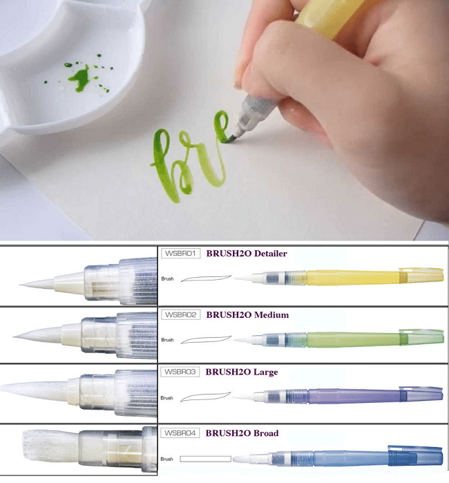
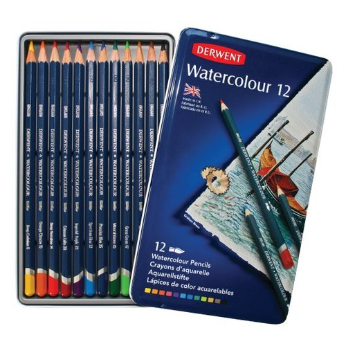
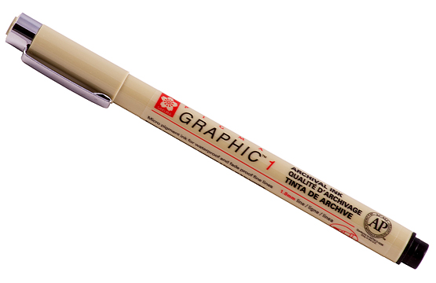

צבע שבו משתמשים במים בשביל לציר בו (אם לא היה מובן מהשם) אחד הצבעים החוסכוניים ביותר , כמות קטנה יכולה לשמש אותך למשך זמן גדול מאוד וההובדאה שגם אחרי שהצבע איתשבש אם קצת מים אפשר להישתמש בו שוב.קכול שתוסיפו יותר מים כך הצבע יהיה שקוף יותר אז לא להגזים והתכניקה ציור עם חומר זה להתחיל מהגוונים הבעירים ביותר וכך להמשיך לכהים יותר . מכיוון שעל שבע בהיר אפשר לעבור בצבע קהה יותר ובכך לקסות אותו אך אי אפשר לעשות את זה ההפך.אפשר להישתמש עם גואש(אך זה ליותר מתקדמים בצבעי מים).
|  |  |  |
|
מברשת מים היא כמו מברשת רגילה רק שבמקום לתבול כול פעם במים אפשר ללחוץ עליה והמים יצאו |
אפרונות צבעונים שאם מגע עם מים נהיים כמו צבעי מים |
ממליצה מאוד: טוש/עט שלא נערס אם שמים עליו מים |
עד כמה אהבתה את העמוד?